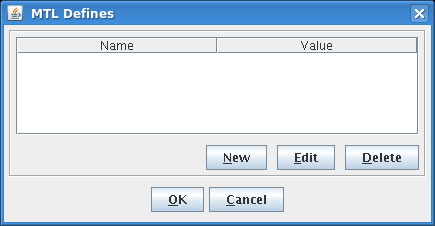

MTL Defines
The MTL Defines dialog lets you override values for :defines: keywords in the APG pattern file) with custom values. This corresponds to the -D command line option (as described in apgc command syntax).

You can open the dialog by clicking the Define button in the MTL Compiler Control dialog.
Elements of the dialog
The list in the center of the dialog lists all value overrides that you have specified.
The buttons at the bottom let you manage them:
- Clicking New opens a second dialog with two fields:
- Name: The name of the define. This name must exist as a :name: in the :defines: section of the APG pattern file.
- Value: The value that is to be used in the compilation. This overrides the value assignment from the APG pattern file.
- Edit: Clicking this button opens the selected value assignment in a second dialog which is similar to the one described for New above. You can change the name or hte value in that dialog.
- Delete: Clicking this button removes the selected value assignment.
- OK: Clicking this button closes the dialog while saving all changes.
- Cancel: Clicking this button closes the dialog while discarding all changes made since it was last opened.
Functional changes
- Introduced in MTP 3.0.1